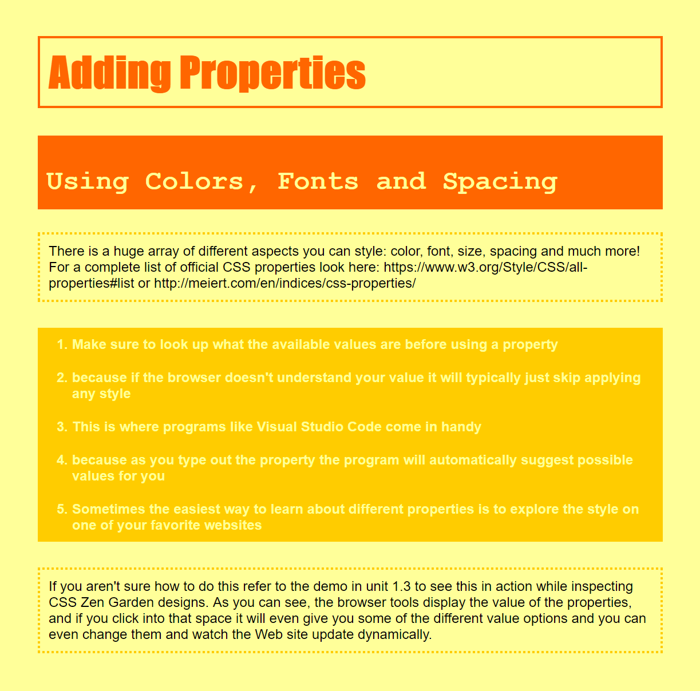

The course provided HTML code and a partial style.css file in which I had to fill in the properties to make the code look like the below picture. The course did have 2 notes (below). So does the initial page look close to the picture below?
This exercise uses three common fonts, Helvetica, Impact and Courier New. If you are on Windows or MacOS, you almost certainly have all three of them. But Linux, Android and others usually do not offer Impact and Courier New. Microsoft made free versions available and on most Linux distributions there is an easy way to install them: look in your package manager for a package called ttf-mscorefonts-installer (or similar). If you don't want to install fonts and you are on Linux, you can try Courier instead of Courier New. Availability of other fonts differs a lot. Maybe you can look in the system settings to see if there is an interesting font available to use instead of Impact. But this points to a fundamental limitation of font-family in CSS: you cannot be sure that somebody who views your pages has all the fonts that you chose. The solution is to embed the fonts in the style sheet (a technique known as Web Fonts). But that is beyond the scope of this course.
The challenge of this exercise lies mostly in finding which elements need padding, which need margins and which need both.